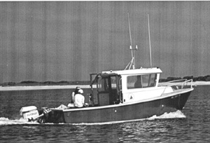

|  copyright - WHOI |
Built: by Winninghoff Boats, Rowley, MA. Length: 24' |
The second Mytilus, built in 1990, is a welded aluminum vessel
used by the WHOI Coastal Research Center. Before the vessel arrived
at Woods Hole, the CRC had a contest to select a name for the boat.
Maggie Rioux and Michael Moore won the contest. Mytilus is
a genus name for the blue mussel.